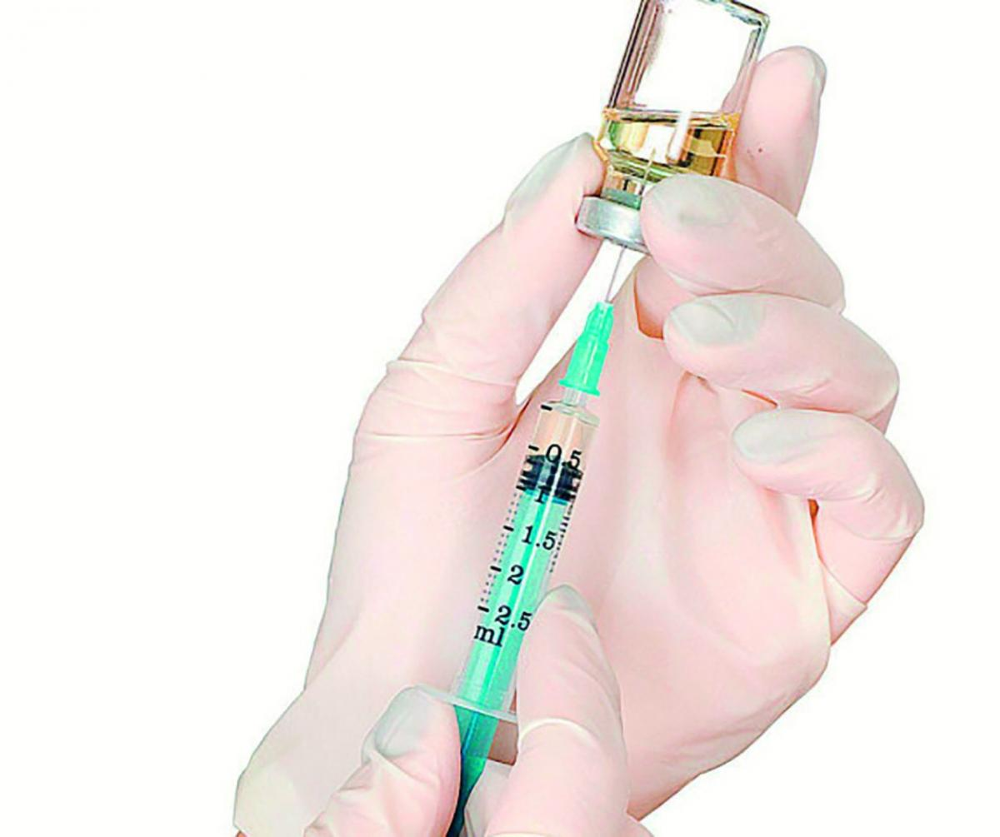

Evitar a transmissão entre parceiros consequentemente evita a transmissão para o feto, por isso é importante detectar a doença o quanto antes para realizar tratamento adequado.

O tratamento é realizado através de antibióticos eficazes contra bactérias sensíveis. Procurar uma unidade de atendimento é fundamental para saber como será o tratamento com esse medicamento. O mesmo utilizado para Sífilis adquirida é também o da Sífilis congênita, sendo que a gestante infectada deverá se preocupar em faze-lo até um mês antes do parto. O bebê que nasce com Sífilis congênita ficará internado no hospital de 7 à 10 dias recebendo a medicação. Vale lembrar que se não tratado pode levar ao aborto.